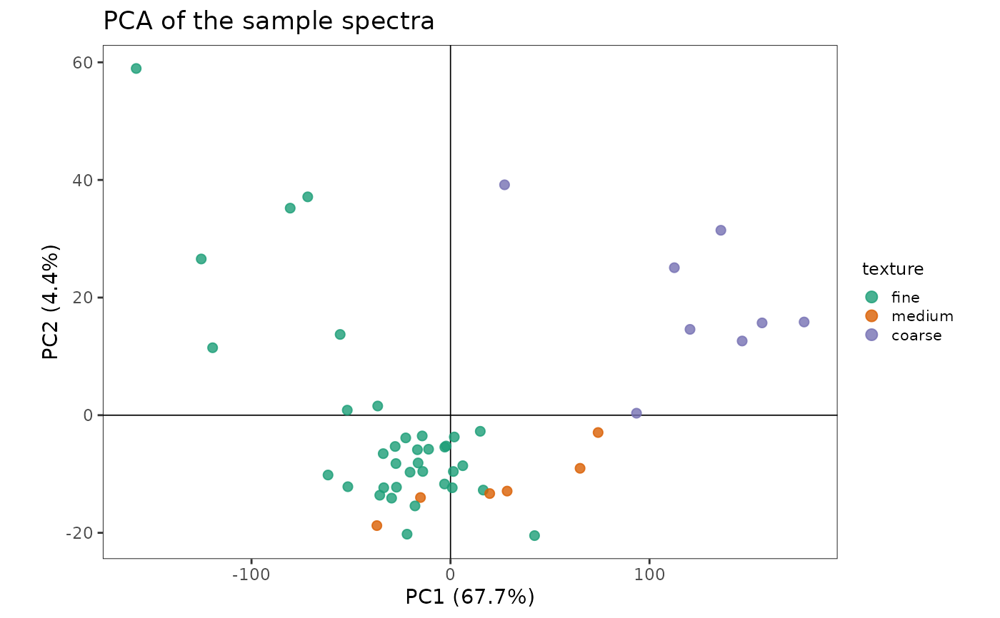
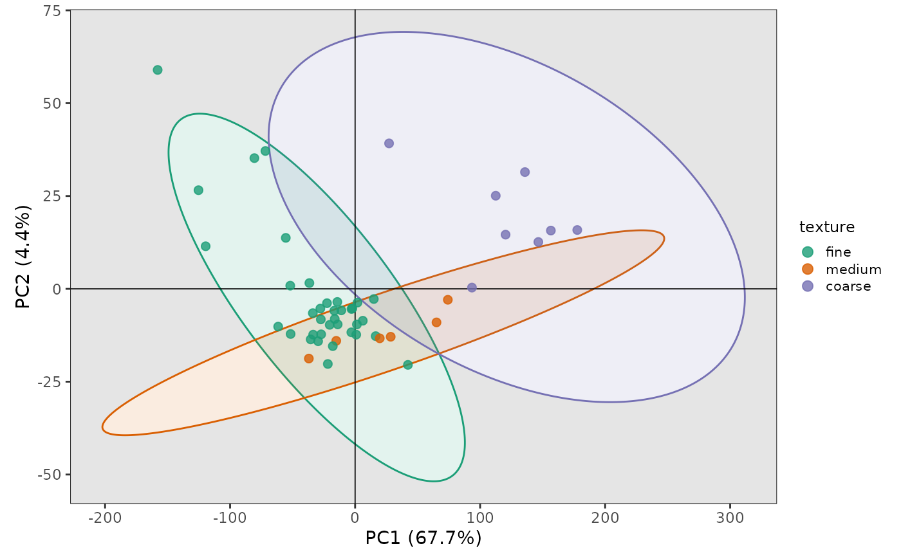
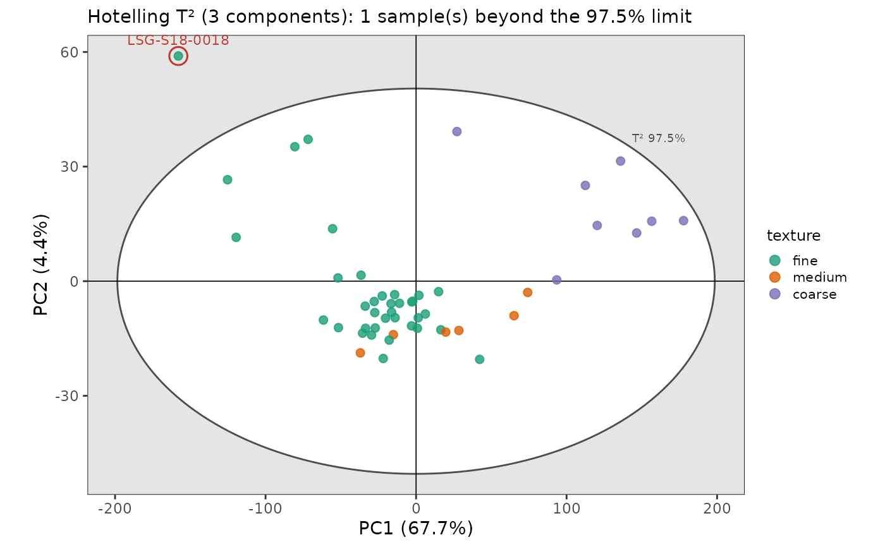
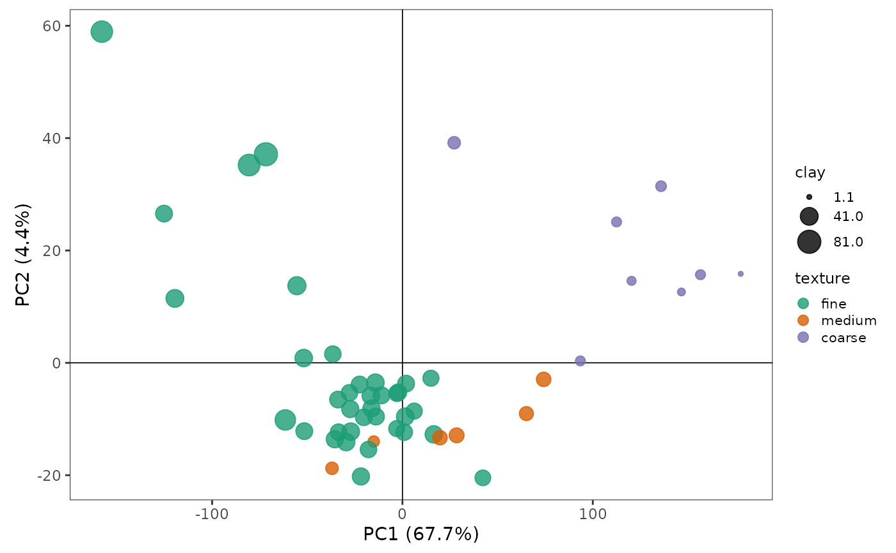
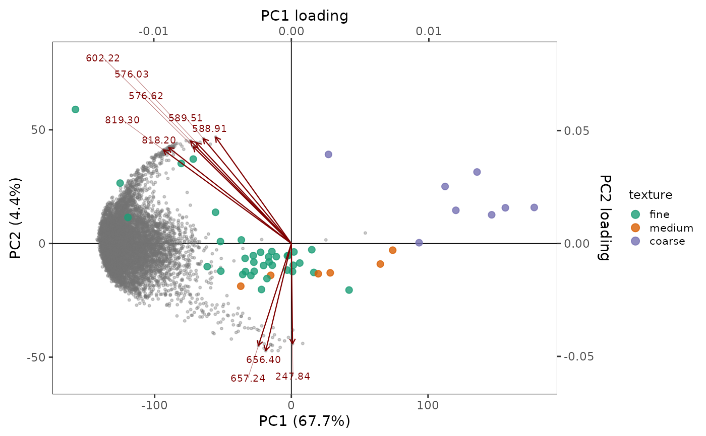
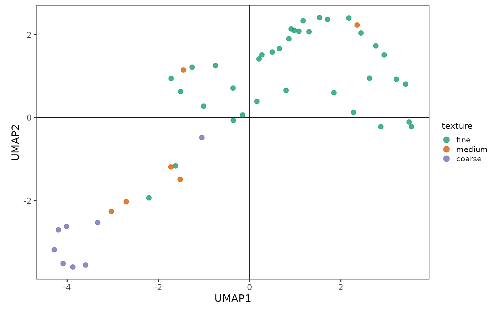

Draws the samples in two dimensions of an embedding, such as UMAP
coordinates from embed::step_umap(), principal component scores from
recipes::step_pca(), robpca() or stats::prcomp(), colored by a
variable.
Usage
plot_embedding(
data,
x = NULL,
y = NULL,
colour = NULL,
size = 2,
alpha = 0.8,
ellipse = FALSE,
conf_level = 0.975,
robust = FALSE,
distribution = "normal",
hotelling = "none",
k = 2,
t2_method = "f",
label = NULL,
biplot = FALSE,
biplot_top = 10,
aspect_ratio = 0.7,
title = NULL
)Arguments
- data
The embedding: a data frame (such as a baked recipe), a matrix, a
stats::prcomp()fit, or an object ofrobpca(),rospca()ormacropca().- x, y
The columns of the axes, unquoted or as strings. By default, the first two embedding coordinates (see details).
- colour
The variable coloring the points: a column of
data(unquoted or as a string), or a vector with one value per sample.- size
The size of the points: a number (default 2), or a numeric column of
dataor vector with one value per sample to vary it.- alpha
The opacity of the points.
- ellipse
A logical: draw confidence ellipses (
FALSE, default). Needs the ConfidenceEllipse package.- conf_level
The confidence level(s) of the ellipses, confidence and \(T^2\): one or more values between 0 and 1. Default is 0.975. The samples beyond a \(T^2\) limit are flagged at the highest level.
- robust
A logical: robust ellipses (
FALSE, default).- distribution
The quantile of the ellipses:
"normal"(default, chi-square) or"hotelling".- hotelling
Hotelling's \(T^2\) ellipses and outliers:
"none"(default),"all"(all samples) or"group"(within the groups of a discretecolour). Needs the HotellingEllipse package (1.3.0 or later).- k
The number of components of \(T^2\): the two axes, then the next embedding coordinates. Default is 2.
- t2_method
The distribution of the \(T^2\) limits:
"f"(default) or"beta"(seehotelling_t2()).- label
The labels of the outlying samples: a column of
dataor a vector with one value per sample. By default, their row numbers.- biplot
A logical: draw the loadings over the scores (
FALSE, default).- biplot_top
The number of loadings drawn as labeled arrows. Default is 10.
- aspect_ratio
The ratio of the height to the width of the panel. Default is 0.7;
NULLlets the panel fill the plot.- title
The plot title.
Details
By default, the axes are the first two columns named like embedding
coordinates (UMAP1, PC1, Comp1, ...; the name followed by a
number), or else the first two numeric columns. A numeric colour uses
a continuous viridis scale, other types a discrete palette.
With ellipse = TRUE, a confidence ellipse is drawn for each group of a
discrete colour (or for all the samples otherwise), with
ConfidenceEllipse::confidence_ellipse(), at each level of conf_level
(0.975 by default). It covers the region expected to hold that share of
the samples of the group if they follow a
bivariate normal distribution, from their mean and covariance, or from
robust estimates (MCD) with robust = TRUE, which resist outlying
samples. distribution = "hotelling" uses the quantile of Hotelling's
\(T^2\) distribution, which accounts for the uncertainty of the
estimates and suits small groups. Robust estimates need larger groups
(the MCD fits a subset of about three quarters of the samples): with
fewer than about 10 samples per group, their ellipses can be flat or
leave out several samples. Groups with fewer than 4 samples get no
ellipse.
With hotelling = "all", the ellipses of Hotelling's \(T^2\) at each
level of conf_level (97.5% by default) are drawn for all the
samples (contours of \(T^2\) on the two components shown, from their
mean and covariance, with HotellingEllipse::ellipseCoord()), and the
samples beyond the limit at the highest level of \(T^2\) on k
components (see hotelling_t2()) are circled and labeled: the classical
outlier limits of a score plot. With hotelling = "group", each group of a discrete colour gets its own ellipses and
limits, which flags the samples atypical of their own group. The
ellipses are labeled with their level (instead of a legend), and drawn
for the two components shown, while the limits use
k components, so with k > 2 a flagged sample can lie inside the
ellipses. \(T^2\) suits linear scores such as PCA or PLS; on a UMAP
map, whose distances are not meaningful, prefer ellipse.
Style. The panel is drawn in the style of SIMCA score plots: grey
outside the outermost ellipse (of \(T^2\), or of each group) and white
inside, so that the samples beyond the limits stand out, with no grid and
a fixed aspect_ratio (0.7 by default; NULL lets the plot fill the
space), and thin black lines through the origin (when it lies in the
range of the samples, as for centered scores). Without ellipses, the
panel is white.
Axes. For a stats::prcomp() fit or a robust PCA, the axis titles
give the share of the variance of each component: of the total variance
for stats::prcomp(), and of the variance of the k components of the
model for robpca(), rospca() and macropca(), which estimate only
these. With groups, the ellipses (confidence, or \(T^2\) with
hotelling = "group") are filled with the color of their group.
Point size. size is a number, or a numeric variable (a column of
data or a vector with one value per sample), such as the concentration
of an element, which sets the size of each point, with a legend.
Biplot. With biplot = TRUE (for a stats::prcomp() fit or a robust
PCA), the loadings of the two components are drawn over the scores: all
the variables as faint points, and the biplot_top longest as labeled
arrows. For spectra, the arrows are the local peaks of the loading
length along the wavelength, one per emission line, labeled with their
wavelength. Each axis of loadings is scaled to the range of its scores,
and read on the top and right axes. A sample lies toward the arrows of
the variables in which it is high.
In a UMAP embedding, only the neighborhoods are meaningful: the sizes of
the clusters and the distances between them are not, and they change
with neighbors and min_dist. Read the plot as a map of which samples
are similar, not as a quantitative projection.
Examples
data(soilLIBS)
spectra <- average(soilLIBS[-(2:8)], Sample)
# soil texture in three classes (USDA general terms: coarse = sands and
# sandy loams, medium = loams and silty loams, fine = clays and clay loams)
classes <- c(Sand = "coarse", `Loamy Sand` = "coarse", `Sandy Loam` = "coarse",
Loam = "medium", `Silt Loam` = "medium", Silt = "medium",
`Clay Loam` = "fine", `Silty Clay Loam` = "fine", `Sandy Clay Loam` = "fine",
Clay = "fine", `Silty Clay` = "fine", `Sandy Clay` = "fine")
texture <- soilLIBS$Texture[match(spectra$Sample, soilLIBS$Sample)]
texture <- factor(classes[as.character(texture)], levels = c("fine", "medium", "coarse"))
pca <- stats::prcomp(spectra[-1], scale. = TRUE)
plot_embedding(pca, colour = texture, title = "PCA of the sample spectra")

if (rlang::is_installed("ConfidenceEllipse")) {
plot_embedding(pca, colour = texture, ellipse = TRUE, distribution = "hotelling")
}
#> Warning: RGL: unable to open X11 display
#> Warning: 'rgl.init' failed, will use the null device.
#> See '?rgl.useNULL' for ways to avoid this warning.

# Hotelling's T-squared limits of the score plot, on 3 components
if (rlang::is_installed("ConfidenceEllipse")) {
plot_embedding(pca, colour = texture, hotelling = "all", k = 3, label = spectra$Sample)
}

# point size by clay content, and a biplot of the emission lines
clay <- soilLIBS$Clay[match(spectra$Sample, soilLIBS$Sample)]
plot_embedding(pca, colour = texture, size = clay)

plot_embedding(pca, colour = texture, biplot = TRUE)

if (rlang::is_installed(c("recipes", "embed"))) {
set.seed(1)
umap <- recipes::recipe(~ ., data = spectra) |>
recipes::update_role(Sample, new_role = "id") |>
recipes::step_normalize(recipes::all_predictors()) |>
recipes::step_pca(recipes::all_predictors(), num_comp = 10) |>
embed::step_umap(recipes::all_predictors(), neighbors = 10) |>
recipes::prep() |>
recipes::bake(new_data = NULL)
plot_embedding(umap, colour = texture)
}
